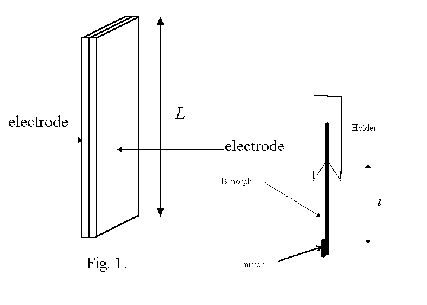

28th
International Physics Olympiad
Sudbury, Canada
EXPERIMENTAL COMPETITION
Tuesday, July 15th, 1997
Time Available: 5 hours
Read This First:
- Use only the pen provided.
- Use only the front side of the answer sheets and paper.
- Read page 4 before touching any of the apparatus, in particular
be extremely careful in handling the bimorph.
- In your answers please use as little text as possible;
express yourself primarily in equations, numbers and figures.
- Please indicate on the first page the total number of pages
you used.
- At the end of the exam please put your answer sheets, pages
and graphs in order.
This problem consists of 11 pages.
Examination prepared at:
University of British Columbia
Department of Physics and Astronomy
Hosted by:
Laurentian University and Science North
Characterization of the bimorph.
Warning: Do not look directly into the laser beam
or into the laser beam reflected from the mirror - it may damage
your vision.
The bimorph consists of two layers of piezoelectric
material bonded together. Metal electrodes have been evaporated
onto the two outer surfaces to allow the application of an electric
field. (See Fig. 1). The layers are chosen in such a way that
when an electric field is perpendicular to the outer surfaces,
one of them expands (along L), while the other contracts
(along L). Reversing the field reverses the
effect on the layers: the one which previously contracted expands
while the other one contracts. Assume that upon the application
of the field the bimorph bends into a circular arc.

Note: Piezoelectric materials change their dimensions while in
an electric field and produce an electric potential when under
mechanical strain. The relative change of a given dimension in
the electric field is, in first approximation, proportional to
the field; there is however some hysteresis which means that if
one applies the field and then reduces it back to zero the dimensions
will not return to exactly the original values. One has to apply
some small field in the opposite direction to restore the dimensions
to the original value. The force expanding or contracting the
piezoelectric material is, in first approximation, proportional
to the field.
INSTRUCTIONS
1. Determine the dependence of the displacement of the bimorph's
free end as a function of the applied voltage in the range from
+36V down to -36V and back up to +36V. During these measurements,
change the voltage only in the indicated direction (for example,
when you measure in the range from -36V to +36V always increase
the voltage and never decrease it; if you miss a point, skip it).
Demonstrate this dependence with a graph.
During one cycle of applied voltage from +36V to -36V and back
to +36V a certain amount of energy is dissipated in the bimorph
itself. Identify and calculate a quantity which is proportional
to this amount of energy.
2. For a given bimorph, if the hysteresis is neglected,
the displacement of the bimorph's free end is given by the formula
d = A Vm l n where V is the applied
voltage, l the length of the bimorph's free end (measured
from the edge of the contacts in the holder) and m, n and A are
constants. Find, by performing the necessary measurements and
calculations, the constants m, n and A.
3. Measure the capacitance of the bimorph.
Warning: Do not look directly into the laser beam
or into the laser beam reflected from the mirror - it may damage
your vision.
Apparatus:
- A bimorph of length L=(38+-1) mm, with a small mirror attached
to one end, clamped in the holder (clothes pin) with attached
contacts and leads. You can change the length of the free part
of the bimorph l by moving it in the holder. Be careful,
the bimorph is delicate!
- A laser pointer (with a rubber band around it, which can be
used to keep the switch on during the measurements).
- Black modeling clay to fix the bimorph holder and the laser
pointer on the table.
- A screen (use the graph paper which you can attach to the
partition around the table).
- A multimeter with cables (To measure DC voltage with this
multimeter rotate the switch to the position in which the little
circle points at 200 in the area marked DCV. The input impedance
for the voltage measurements is equal to 1 M, accuracy of the
measurement is 0.1V).
- A variable resistor (potentiometer) 2.5M (to control the bimorph's
voltage) with three leads. The red lead is connected to the central
(moving) electrode of the potentiometer.
- A pack of four 9V batteries with leads (Note: The resistance
of the battery pack was increased by adding a 5k resistor in series
with one of the leads. This is to limit the current and protect
the circuit. DO NOT short or bypass this resistor).
- A (1.00+-0.05) G resistor (note: the resistance of this resistor
can be affected by the residue from your skin; do not touch the
body of the resistor, only the metal wires).
- A stop watch.
- A ruler.
- Masking tape.
Answer Sheets
- Part 1
- Draw a diagram of the circuit you used to determine the displacement
of the free end of the bimorph versus voltage. (1 point)
- Draw a schematic diagram showing the geometry of the setup
and label all the relevant quantities. (1 point)
- Give the formula relating the displacement of the bimorph's
free end to the measured quantities. Enter the formula here with
all the variables explained, referring to the diagram in 1.2,
and enter the number of the page containing the derivation of
this formula. (2 points)
- Demonstrate the dependence of the displacement of the free
end of the bimorph on voltage on the graph paper provided. Indicate
which points correspond to measurements made while increasing
voltage and those made while decreasing voltage. Remember to label
the axes including the values and units. Write down the number
of the graph. (2 points)
- Identify a quantity proportional to the energy dissipated
in the bimorph. (1 point)
- Enter here the value of the quantity proportional to the
energy dissipated in the bimorph, its error and units. (1.5 points)
- Part 2
- Enter here the value for m. Enter the numbers of the pages
containing data tables, graphs and calculations used to determine
this value. (1 point)
- Enter here the value for n with error. Enter the numbers of
the pages containing data tables, graphs and calculations used
to determine this value. (1.5 point)
- Enter here the value of the constant A, its error and units.
(3 points)
- Part 3
- Draw a diagram of the circuit you used to measure the capacitance
of the bimorph. (1 point)
- Write down the quantities you measured and the formula you
used to obtain the capacitance of the bimorph. Write down the
numbers of the pages containing the diagrams, graphs and data
tables. (3 points)
- Enter here the value of the capacitance, its error and units.
(2 points)